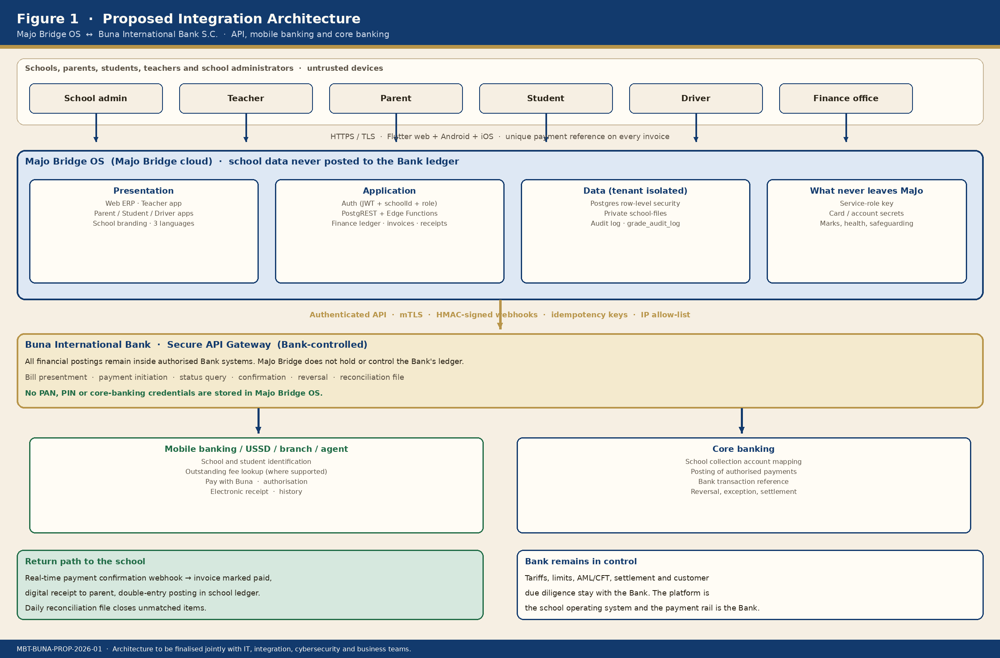

Confidential · For internal Bank evaluation
Technical and Financial
Partnership Proposal
Deployment and Integration of a Cloud-Based School Management System
with Buna International Bank S.C.
| Submitted by | Majo Bridge Technologies and Events PLC Product: Majo Bridge OS |
|---|---|
| Proposed partner | Buna International Bank S.C. |
| Attention | Financial Technology Partnership Directorate, Information Technology, Risk, Compliance and Legal |
| Document number | MBT-BUNA-PROP-2026-01 · Version 1.1 |
| Issue date | |
| Valid until | |
| Contact | +251 911 646 444 · +251 911 133 548 · +251 912 798 279 · majobridgetech@gmail.com · Addis Ababa, Ethiopia https://www.majobridge.com |
| Classification | CONFIDENTIAL. For evaluation by Buna International Bank S.C. No live secrets in this file. |
Confidential commercial proposal
This document combines the technical, financial and partnership offer. Fees differ by region. In Addis Ababa, initial configuration is ETB 1,000,000 per school (excl. VAT). Recurring subscription is 3% per term/quarter of student-purpose amounts paid through the Bank (excl. VAT). Salary and staff payments are excluded from the 3%. Hosting is covered by the technology provider. For training outside Addis Ababa the Bank covers accommodation and transport for 2–3 Provider staff. Annex B is the commercial proforma.
Contents
| 1. Executive summary |
| 2. Background and rationale |
| 3. Objectives of the partnership |
| 4. Overview of the proposed School Management System |
| 5. Proposed technical integration |
| 6. Proposed partnership and operating model |
| 7. Financial and commercial proposal |
| 8. Implementation approach and timeline |
| 9. Service level and technical support |
| 10. Risk management and compliance |
| 11. Performance monitoring and key performance indicators |
| 12. Governance and partnership management |
| 13. Proposed contractual arrangements |
| 14. Expected benefits to the Bank |
| 15. Proposal for management consideration and approval |
| 16. Conclusion |
| Annex A. Majo Bridge OS module catalogue (61 modules) |
| Annex B. Commercial proforma invoice |
| Annex C. Documents held by the technology provider |
| Annex D. Glossary |
How to read this document. Sections 1–16 set out the partnership, the live Majo Bridge OS platform, integration with the Bank, commercial terms, implementation, SLA, risk and governance. Annex A is the full 61-module catalogue. Annex B is the commercial proforma (From / To). Annex C lists supporting documents. Annex D is a short glossary.
1. Executive summary
Majo Bridge Technologies and Events PLC is pleased to submit this Technical and Financial Partnership Proposal to Buna International Bank S.C. for the deployment and integration of its existing cloud-based School Management System, Majo Bridge OS, with the Bank’s digital financial services infrastructure. The partnership establishes an integrated digital ecosystem in which schools, students, parents, teachers and administrators run academic, administrative and financial operations on Majo Bridge OS, while tuition, school-fee collection, payroll and related payments are processed through the Bank’s authorised channels.
Majo Bridge OS is not a system to be designed after contract signature. It is a production platform: 61 modules across academics, student services, finance (including a double-entry ledger), Ethiopian payroll, transport with live GPS, communication and compliance; six portals (administration, teacher, parent, student, driver, platform console); three languages (English, Amharic, Afaan Oromo); one Flutter codebase on web, Android and iOS. Tenant isolation is enforced in PostgreSQL row-level security, not only in the user interface. A live demonstration is available at https://www.majobridge.com.
Through integration with the Bank’s Core Banking System and mobile-banking platform, the solution will provide convenient, secure and traceable digital payment services. The technology provider will never independently maintain or control the Bank’s financial ledger. All actual financial postings will be performed through the Bank’s authorised systems.
The partnership is expected to generate mutual business value through:
- Increased digital financial transactions and payment volumes on recurring school-fee cycles.
- Customer acquisition among participating schools, parents, teachers and staff, with recorded consent for account opening.
- Deposits through school collection accounts, payroll accounts and family balances held for recurring fees.
- Growth in non-interest income through agreed transaction and service fees (Bank tariffs remain Bank-controlled).
- Improved customer experience: Pay with Buna inside the parent app that families already open for attendance, results and the school bus.
- Expansion of the Bank’s digital financial services ecosystem into education, with co-branding available.
- Improved operational efficiency, financial transparency and payment reconciliation for schools — the reason they stay on the platform and therefore with the Bank.
Majo Bridge proposes a hybrid commercial partnership that differs by region (Model C, Section 7). In Addis Ababa, initial configuration is ETB 1,000,000 per school (exclusive of VAT). The recurring subscription is 3% per academic term or quarter of school fees and other student-purpose amounts successfully paid through the Bank (exclusive of VAT). Salary and staff payments are not subject to the 3%. Hosting of the production environment is covered by the technology provider. For training outside Addis Ababa, the Bank covers accommodation and transport for two to three Provider staff. The commercial proforma is Annex B.
2. Background and rationale
The education sector is a natural extension of digital financial services. Schools run regular cycles of tuition, registration, examination, transport and materials fees, staff salaries and supplier payments. Traditional collection still leans on cash, fragmented bank slips and manual reconciliation. Parents already carry a mobile phone; they do not need a new behaviour so much as a trusted button on an app they open every school day.
Majo Bridge OS already digitises the school’s administrative, academic and financial operations, including invoices, receipts and a double-entry ledger. Full business value for the Bank appears when that ledger is fed by the Bank confirmations rather than by a finance officer typing in a slip number.
Buna International Bank, through its digital financial services and technology-partnership initiatives, can establish a durable relationship with educational institutions and the families around them. The collaboration combines:
- Majo Bridge’s school management platform, Ethiopian product ownership, existing school ecosystem and Addis Ababa support desk.
- the Bank’s banking infrastructure, financial services, digital payment channels, KYC/AML controls and customer-relationship management.
3. Objectives of the partnership
3.1 General objective
To establish a strategic technology and financial-services partnership between Majo Bridge Technologies and Events PLC and Buna International Bank S.C. through the integration of the existing cloud-based School Management System, Majo Bridge OS, with the Bank’s digital banking infrastructure.
3.2 Specific objectives
- Integrate school-fee collection with the Bank’s authorised infrastructure.
- Enable parents (and, where relevant, students) to pay through the Bank’s mobile banking, USSD, branch and agent channels, and through Pay with Buna in the parent app.
- Facilitate automated payment confirmation, reconciliation and transaction reporting, including idempotent posting into the school ledger.
- Increase the number of schools maintaining banking relationships with the Bank.
- Increase utilisation of the Bank’s digital payment channels on a recurring academic calendar.
- Generate sustainable revenue for both parties, with Bank tariffs remaining under Bank control.
- Enhance financial inclusion and digital transformation in the education sector.
- Establish a scalable partnership that can be expanded to additional educational institutions, including groups of schools under one tenant.
- Offer optional salary-file and supplier-payment rails so payroll and payables also settle at Buna.
- Give the Bank a partner portal of aggregated programme figures without exposing children’s academic or safeguarding records.
4. Overview of the proposed School Management System
4.1 System description
Majo Bridge OS is an existing cloud-based software solution designed, owned and operated by Majo Bridge Technologies and Events PLC in Addis Ababa. It digitises educational-institution management on a centralised platform covering academic, administrative, operational and financial activities. The platform is the primary school-management interface. Buna International Bank provides the financial-transaction infrastructure.
| Dimension | Majo Bridge OS as built today |
|---|---|
| Legal product owner | Majo Bridge Technologies and Events PLC — full source code, not a reseller of a foreign SMS. |
| Modules | 61 modules in ten groups, switchable per school. |
| Portals | Administration / staff web ERP · Teacher · Parent · Student · Driver · Platform console. |
| Clients | Web, Android, iOS, Windows, macOS, Linux — one Flutter codebase. |
| Languages | English, Amharic (አማርኛ), Afaan Oromo. |
| Tenancy | Multi-tenant. Every row carries school_id. PostgreSQL RLS compares it with the JWT on every read and write. |
| Finance | Fee structures, invoices, receipts, cashboxes, expenses, budgets, payables, double-entry ledger, trial balance, income and expenditure, balance sheet, cash flow, parent statements. |
| Payroll | Ethiopian income tax and pension; payslips; Excel/PDF export; bulk salary file for the Bank. |
| Quality | About 990 automated application tests and role-by-role database permission tests on every change. |
| Live demonstration | https://www.majobridge.com |
| Reference school | Fenote Raey Academy (live). Further references under NDA. |
4.2 Functional scope
The following functional areas are proposed for evaluation and confirmation during technical due diligence. The table below is the operational scope a school runs on Majo Bridge OS. Rows 13–20 are capabilities a school (and therefore the Bank) would otherwise have to buy separately.
| No. | Functional area | Description |
|---|---|---|
| 1 | Student information | Admissions through alumni. One student record, documents, transfers and promotion. Parent–child links are verified before a parent sees any data. |
| 2 | Academic management | Grades, sections, subjects, timetable, lesson plans, LMS, curriculum office and classroom teacher workload — live today, not a future module. |
| 3 | Attendance | Daily and per-period attendance with parent notification on the app. |
| 4 | Examinations and assessment | Weighted markbook, exam bank, head-of-department and principal approval, branded report cards and a full grade audit log. |
| 5 | Staff and human resources | Staff records, leave, contracts, role-based access and an administration directory. |
| 6 | School fee management | Fee structures, student invoices, unique payment references, cashboxes, budgets, payables and parent fee statements. |
| 7 | Payment and billing (Bank rail) | Pay with Buna from the parent app; real-time confirmation; electronic receipt; posting into the school's double-entry ledger. The Bank remains the processor of record. |
| 8 | Parent and student portal | Native Android and iOS plus web. Parents open the app for attendance, results, homework, messages and the school bus — so the payment button sits where they already are. |
| 9 | Financial reporting | Trial balance, income and expenditure, balance sheet, cash flow and collection reports. Bank settlement lands in the same books. |
| 10 | Communication | Announcements, events, gallery, calendar, secure teacher–parent messaging and push notification in English, Amharic and Afaan Oromo. |
| 11 | Reporting and analytics | School dashboards, at-risk students, exports. The Bank partner portal sees only aggregated, non-personal programme figures. |
| 12 | User management | Role and module matrix per school. JWT carries schoolId and role. Row-level security in PostgreSQL enforces the wall on every read and write. |
| 13 | Payroll (Ethiopia) | Monthly payroll with Ethiopian income tax and pension, payslips, and a bulk salary file in the Bank's format. |
| 14 | Transport | Routes, buses, driver app, passenger list and live GPS for parents. |
| 15 | Inventory and procurement | Purchase requests, approvals, suppliers, store stock and issues — supplier payments can ride the same Bank rail. |
| 16 | Safeguarding, clinic and discipline | Restricted to named roles. Never shared with the Bank. |
| 17 | Library, e-books and materials | Catalogue, loans and paid learning materials (small, recurring purchases). |
| 18 | Multi-school tenancy | One platform, many schools. Each school's data, branding, users and modules are isolated. Optional Bank-dedicated environment or in-country host. |
| 19 | Audit and compliance | School and platform audit logs, go-live checklist, system health. MFA for Admin and Finance. |
| 20 | Maya Assistant (optional) | Staff AI helper on a counts-only snapshot. Key optional; the ERP works without it. No dump of children's identities to the model. |
5. Proposed technical integration
5.1 Proposed integration architecture
The proposed solution uses an API-based integration architecture connecting Majo Bridge OS with the Bank’s approved digital banking infrastructure. The School Management System remains hosted in the technology provider’s cloud environment (or, if the Bank requires it, in a Bank-dedicated or in-country instance). Financial transactions are processed only through the Bank’s approved systems.

5.2 Core integration requirements
| No. | Integration area | Description | Responsibility |
|---|---|---|---|
| 1 | School registration | Participating schools created in Majo Bridge OS and identified to the Bank | Joint |
| 2 | School account mapping | Each school mapped to its designated Buna collection account | Bank |
| 3 | Fee generation | Student-specific invoices and unique check-digit payment references | Majo Bridge |
| 4 | Bill presentment | Bank channels look up amount due by reference before payment, where the Bank's channel supports it | Joint |
| 5 | Payment initiation | Pay with Buna in the parent app, or pay-in at mobile banking, USSD, branch or agent quoting the reference | Joint |
| 6 | Payment processing | Authorisation, posting and settlement inside authorised Bank systems only | Bank |
| 7 | Transaction confirmation | Signed webhook plus status query. Idempotency keys so a retry never double-posts | Joint |
| 8 | Electronic receipt | Parent receipt in the app; school receipt in Finance; Bank reference stored on the invoice | Joint |
| 9 | Reconciliation | Daily file or interface matching Bank postings to invoices; exceptions on both desks | Joint |
| 10 | Transaction reporting | School collection reports and Bank partner-portal aggregates | Joint |
| 11 | Exception handling | Failed, pending, duplicate and reversed transactions with a full trail | Joint |
| 12 | Payroll file | Monthly salary file generated from Payroll in the Bank's agreed format | Majo Bridge / Bank |
| 13 | Supplier / expense payment | Approved payables exported for payment from the school's Buna collection account | Joint |
| 14 | Account-opening referral | Parent or staff consent to be contacted by the Bank; referral tracked per school | Joint |
5.3 Mobile banking integration
The integration will enable parents to pay school fees using the Bank’s approved mobile-banking services and, where the Bank enables it, USSD, internet banking, branch and agent. Anticipated capabilities:
- School identification and selection.
- Student identification.
- Retrieval or verification of outstanding fees, where the Bank’s channel supports bill presentment.
- Payment initiation, including Pay with Buna from the parent app.
- Transaction authorisation inside the Bank’s channel (the parent never types a card secret into MaJo).
- Payment confirmation to the platform by signed webhook, with a status-query fallback.
- Electronic receipt generation in the parent app and in school Finance.
- Transaction history and reporting.
The final user experience depends on the Bank’s mobile-banking capabilities and integration standards. Majo Bridge will adapt to REST/JSON, ISO 20022, or SFTP file exchange as specified by the Bank in Phase 2.
5.4 Core banking integration
Integration with the Bank’s Core Banking System will facilitate:
- Identification and mapping of designated school collection accounts.
- Processing of authorised payments.
- Posting of successful transactions on the Bank ledger.
- Bank transaction-reference generation, stored on the school invoice.
- Payment status verification.
- Reversal and exception management, mirrored into the school ledger.
- Reconciliation and settlement reporting.
- Optional payroll credit file and supplier-payment file from approved school records.
The technology provider will not independently maintain or control the Bank’s financial ledger. All actual financial postings will be performed through the Bank’s authorised systems.
5.5 Technical and security requirements
The solution will be assessed against the following requirements. Evidence sits in MB-SDD-001, MB-SRS-001, MB-SEC-001 and this table.
| Area | MaJo Bridge proposed control |
|---|---|
| API security | Mutual TLS, IP allow-listing, HMAC-SHA256 (or the Bank's standard) on every integration message, timestamp and replay rejection. |
| Encryption in transit | TLS 1.2+ on web, apps, database, storage, functions and the Bank interface. |
| Encryption at rest | Provider-managed disk encryption on the hosted database. Optional dedicated or in-country instance if the Bank requires Ethiopian residency. |
| Authentication | Individual accounts; bcrypt password secrets; MFA (TOTP) mandatory for Admin and Finance before the Bank pilot. |
| Authorization | Role-based access per school plus PostgreSQL row-level security. A modified client still hits the database wall. |
| Audit trail | School audit log, platform audit log, grade_audit_log (append-only) and a complete log of Bank integration messages. |
| Data protection | Personal Data Protection Proclamation No. 1321/2024. Each school owns its data. Children's marks, health and safeguarding are never sent to the Bank. |
| Payment data | No PAN, PIN, CVV or core-banking credentials stored in Majo Bridge OS. The parent authenticates only inside Bank channels. |
| Secrets | Service-role and Bank credentials live only in Edge Functions / Bank vault. Never in Dart, HTML or mobile binaries. |
| Backup | Daily backups with point-in-time recovery. Proposed RPO ≤ 24 hours, RTO ≤ 8 hours. Restore drill twice a year. |
| Availability | 99.5% monthly for the platform, excluding agreed maintenance outside school hours. Bank systems have a separate SLA. |
| Scalability | Multi-tenant Postgres; schools added from the platform console in minutes. Load tests (k6) before major releases. |
| Monitoring | Crash reporting, system health, CI on every change (~990 app tests plus database permission tests), and monthly service reports to the Bank. |
| Business continuity | Documented incident response; Bank notified within 24 hours of a confirmed incident affecting programme schools. Documented DR. |
| INSA / Hibir pack | System & Architecture Design Document (MB-SDD-001), SRS, TDD, User Guide and Security Documentation prepared for national cybersecurity asset registration. |
| Independent test | Penetration test of web, mobile, functions and the Bank interface by a firm acceptable to the Bank, before production payments. Critical/high findings closed and retested. |
Majo Bridge shall submit relevant technical documentation, security policies, architecture diagrams and supporting evidence during due diligence, and will cooperate with every assessment the Bank requires.
6. Proposed partnership and operating model
6.1 Partnership structure
The partnership will operate under a mutually agreed strategic technology and financial-services collaboration framework, documented in a partnership agreement with SLA, data-processing and confidentiality schedules.
6.2 Roles and responsibilities
A. Buna International Bank S.C.
The Bank will:
- Provide approved banking integration interfaces and sandbox credentials.
- Facilitate mobile-banking integration.
- Facilitate integration with the Core Banking System through authorised channels.
- Define applicable transaction limits, fees and settlement arrangements (Bank-controlled tariffs).
- Support onboarding of eligible schools as banking customers.
- Provide transaction reports and reconciliation information as agreed.
- Provide technical and operational support for Bank-controlled infrastructure.
- Conduct necessary security, risk and compliance assessments.
B. Technology provider (Majo Bridge)
Majo Bridge will:
- Provide the existing School Management System, Majo Bridge OS.
- Maintain the cloud-based platform and infrastructure (or the dedicated / in-country instance if chosen).
- Develop and maintain the required integration interfaces, including idempotent confirmation and daily reconciliation.
- Support school registration and onboarding (about two weeks per school after configuration data is ready).
- Provide application-level technical support in Addis Ababa time.
- Ensure application availability in accordance with the agreed SLA.
- Implement appropriate data-protection and cybersecurity measures, including the hardening programme in Section 5.5.
- Provide operational and performance reports and a Bank partner portal of aggregates.
- Support user training and system adoption. For training outside Addis Ababa, the Bank covers accommodation and transport for 2–3 Provider staff.
- Maintain and upgrade the platform. Changes that affect the Bank interface are released only after joint testing and Bank approval.
6.3 Stakeholder map
| Stakeholder | Proposed role |
|---|---|
| Buna International Bank S.C. | Approved banking interfaces, mobile and core-banking integration, tariffs and limits, school customer onboarding, transaction reports, Bank-side support, security / risk / compliance assessments. The Bank remains processor of record. |
| Majo Bridge | Majo Bridge OS, cloud hosting, integration adapters, school onboarding, application support, SLA, data protection, upgrades. Source code owned in Addis Ababa. Training outside Addis Ababa: Bank covers accommodation and transport for 2–3 Provider staff. |
| Schools | Adopt the system, keep student and fee data current, ask parents to pay through the Bank, operate their own academic and HR processes. |
| Parents / students | Use the app and the Bank's approved payment channels. |
| Joint partnership team | Steering committee: performance, incidents, commercial monitoring and school pipeline. |
7. Financial and commercial proposal
7.1 Proposed commercial model
Majo Bridge proposes that Buna International Bank S.C. sponsors Majo Bridge OS for participating schools. Schools and families use the platform; the Bank pays regional configuration and the term/quarter platform fee. All prices in this section are exclusive of VAT. The model combines:
- Fees that differ by region. The Addis Ababa (capital city) schedule is stated below. Configuration for other regions will be agreed because it differs from the capital rate.
- Addis Ababa initial configuration of ETB 1,000,000 per school, exclusive of VAT.
- A recurring platform subscription of 3% per academic term or quarter of student-purpose amounts successfully paid through the Bank, exclusive of VAT.
- The same 3% on other student-purpose payments through the Bank (transport, materials, meals, registration, examination, uniform and similar).
- Salary and staff payments are excluded from the 3%.
- Cloud hosting covered in full by the technology provider (no hosting line on the Bank invoice).
- For training outside Addis Ababa, the Bank covers accommodation and transport for two to three (2–3) Majo Bridge staff.
The hybrid model is recommended because configuration in the capital is a known per-school amount, while the 3% grows only when families actually pay through the Bank.
7.2 Regional fee schedule
All amounts exclusive of 15% VAT. The legally styled commercial offer is the proforma in Annex B.
| Region | Initial configuration (per school, excl. VAT) | Recurring platform fee (excl. VAT) | Training travel |
|---|---|---|---|
| Addis Ababa (capital city) | ETB 1,000,000 per school | 3% per term / quarter of student-purpose amounts paid through the Bank | Provider is based in Addis Ababa; no out-of-city travel package |
| Other regions / cities | Differs from the Addis Ababa rate — to be agreed per region before that school’s go-live | Same 3% per term / quarter of student-purpose amounts paid through the Bank | Bank covers accommodation and transport for 2–3 Provider staff |
| No. | Fee category | Charging basis | Proposed payer | Amount (excl. VAT) |
|---|---|---|---|---|
| 1 | Initial configuration — Addis Ababa | One-time, per school in Addis Ababa | Bank | ETB 1,000,000 excl. VAT |
| 2 | Initial configuration — other regions | One-time, per school outside Addis Ababa | Bank | Differs by region — to be agreed |
| 3 | Platform subscription — school fees | Per term / quarter, on amounts paid through the Bank | Bank | 3% of paid school fees excl. VAT |
| 4 | Platform subscription — other student-purpose payments | Per term / quarter, on amounts paid through the Bank | Bank | 3% of paid student-purpose amounts excl. VAT |
| 5 | Salary and staff payments | Payroll / salary file / staff payments through the Bank | Excluded | Not subject to the 3% |
| 6 | Cloud hosting | Monthly, production environment | Technology provider | Covered by the Provider — no charge to the Bank |
| 7 | Standard support & updates | Included with the 3% subscription | Technology provider | Included |
| 8 | Training in Addis Ababa | Per session or agreed package | To be discussed | To be discussed (excl. VAT) |
| 9 | Training outside Addis Ababa — travel | Accommodation and transport for 2–3 Provider staff | Bank | Bank covers accommodation and transport |
| 10 | Bank customer tariff | Per successful Bank payment | Bank-controlled | Not a Majo Bridge charge |
7.3 What the 3% applies to
For each academic term or quarter, the platform fee is 3% of amounts successfully paid through the Bank in that period for:
- School fees (tuition and related academic-fee invoices).
- Other student-purpose payments: registration, examination, transport, learning materials, meals, uniform and similar student charges.
Excluded from the 3%: salary, payroll and other staff payments; failed, reversed or refunded transactions; Bank-controlled customer tariffs (those remain the Bank’s). VAT is then added at 15% on the 3% fee. This proposal is not a tax invoice.
7.4 Worked examples (exclusive of VAT)
Platform fee for a term / quarter = 3% × Q, where Q is student-purpose collections through the Bank in that period (excluding salary and staff). Hosting is ETB 0 to the Bank.
| Student-purpose collections through the Bank in one term/quarter (Q) | 3% platform fee excl. VAT | VAT 15% on the 3% | Platform fee incl. VAT |
|---|---|---|---|
| 1,000,000 | 30,000 | 4,500 | 34,500 |
| 2,000,000 | 60,000 | 9,000 | 69,000 |
| 5,000,000 | 150,000 | 22,500 | 172,500 |
| 10,000,000 | 300,000 | 45,000 | 345,000 |
| 20,000,000 | 600,000 | 90,000 | 690,000 |
Addis Ababa configuration (per school, exclusive of VAT): ETB 1,000,000. VAT 15% = ETB 150,000; total if VAT applies = ETB 1,150,000 per Addis Ababa school. Example: five Addis Ababa schools → ETB 5,000,000 configuration exclusive of VAT, plus 3% of that programme’s student-purpose collections each term or quarter. Configuration outside Addis Ababa is a different amount and will be quoted per region.
7.5 Training
Training packages (content, number of sessions and any training fee) will be discussed. In addition:
- Training in Addis Ababa: no out-of-city accommodation or transport line. Any training fee is to be discussed and is exclusive of VAT.
- Training outside Addis Ababa: the Bank covers accommodation and transport for at least two to three (2–3) Majo Bridge staff for the training visit. Those travel costs are exclusive of VAT where VAT applies.
7.6 Billing terms
- Addis Ababa configuration (ETB 1,000,000 per school, excl. VAT) is invoiced when that school is authorised for setup and is payable before that school’s production go-live.
- Configuration for other regions is invoiced at the agreed regional amount, on the same go-live rule.
- The 3% platform fee is invoiced in arrears at the end of each academic term or quarter against student-purpose amounts successfully paid through the Bank in that period.
- Payment currency: Ethiopian Birr. All prices before VAT. VAT 15% on taxable lines.
- Bank customer transaction tariffs remain Bank-controlled and are not a Majo Bridge charge.
- Salary and staff payments through the Bank are not included in Q and are not charged the 3%.
- Proposed term: three years from first production school, renewable.
7.7 How the 3% sits next to Bank tariffs
The 3% is the technology provider’s platform subscription, calculated on student-purpose collections. It is separate from the Bank’s own customer tariffs. The Bank retains control of its tariffs. Majo Bridge cannot independently change Bank-related transaction fees.
| Revenue stream | Bank | Technology provider |
|---|---|---|
| Banking transaction tariff | Bank-controlled; remains with the Bank | Not a Majo Bridge charge |
| Platform subscription (3%) | Paid by the Bank on student-purpose collections | 3% of Q per term / quarter excl. VAT |
| Initial configuration | Paid by the Bank (regional) | Addis Ababa ETB 1,000,000 per school; other regions to be agreed |
| Maintenance and hosting | No hosting charge to the Bank (Provider-covered) | Hosting covered by the Provider |
| Additional digital services | Negotiated per service | Negotiated per service |
7.8 Proposed commercial alternatives
| Model | Description | Advantages |
|---|---|---|
| Model A: Percentage only | Platform fee of 3% of student-purpose collections, with configuration deferred | Lowest upfront; depends entirely on collection volume |
| Model B: Configuration only | Bank pays regional configuration; no percentage on collections | Predictable but does not scale with payment volume |
| Model C: Hybrid (recommended) | Regional per-school configuration plus 3% per term/quarter of student-purpose amounts paid through the Bank | Covers setup in Addis Ababa and grows with Bank collections |
Recommended option: Model C – Hybrid — regional per-school configuration (ETB 1,000,000 in Addis Ababa) plus 3% per term/quarter of student-purpose collections through the Bank, all exclusive of VAT.
7.9 Financial projection framework
The following variables support a joint workbook after a school pipeline is named. Worked examples in Section 7.4 already apply the 3% and the Addis Ababa configuration.
| Variable | Description |
|---|---|
| N_AA | Number of participating schools in Addis Ababa |
| N_R | Number of participating schools in other regions |
| C_AA | Addis Ababa configuration = ETB 1,000,000 per school, exclusive of VAT |
| C_R | Configuration fee per school outside Addis Ababa (to be agreed; differs by region) |
| Q | Student-purpose amounts successfully paid through the Bank in the term or quarter (school fees plus other student-purpose payments; excluding salary and staff) |
| L | Platform fee for the term / quarter = 3% × Q, exclusive of VAT |
| T | Applicable Bank transaction charge (Bank-controlled, separate from the 3%) |
Indicative identities (not a forecast): configuration in Addis Ababa ≈ N_AA × 1,000,000; configuration outside Addis Ababa ≈ N_R × C_R; platform fee per term/quarter ≈ 3% × Q. Conservative, base and optimistic cases will be built jointly from named schools.
8. Implementation approach and timeline
The project will be implemented through a phased approach. Indicative total duration: 12 weeks after partnership approval and Bank API readiness.
| Phase | Major activities | Indicative duration |
|---|---|---|
| Phase 1 | Partnership approval and due diligence (legal, risk, security, financial) | 2 weeks |
| Phase 2 | Technical assessment, interface specification, integration design | 2 weeks |
| Phase 3 | API adapters: payment reference, bill presentment, confirmation, reconciliation, payroll file, partner portal | 3 weeks |
| Phase 4 | Joint testing, security assessment, UAT, penetration-test findings closed | 2 weeks |
| Phase 5 | Pilot: selected schools, training, live payments | 2 weeks |
| Phase 6 | Production deployment, monitoring, steering-committee baseline | 1 week |
The actual implementation schedule will be agreed after reviewing the Bank’s API readiness, integration requirements, security-approval process and availability of technical resources.
8.1 Proposed pilot approach
The parties may begin with a controlled pilot involving a limited number of schools (Majo Bridge suggests five, to be chosen with the Bank). The pilot will evaluate:
- School onboarding processes.
- Payment initiation and processing, including Pay with Buna.
- Mobile-banking usability.
- Transaction posting accuracy and idempotency under retry.
- Payment confirmation and electronic receipts.
- Reconciliation effectiveness and unmatched-item handling.
- System performance and parent-app adoption.
- Customer experience.
- Operational support requirements.
Following successful pilot completion, the partnership may be expanded to additional schools. Onboarding one further school is typically about two weeks once configuration data is ready.
9. Service level and technical support
The parties will establish a Service Level Agreement covering application availability, response times, incident resolution, maintenance and escalation. The following are proposed initial targets, subject to mutual agreement. Bank-controlled systems and technology-provider-controlled systems will have separate support responsibilities and escalation arrangements.
| Service parameter | Proposed target |
|---|---|
| Platform availability | 99.5% monthly, excluding agreed exclusions. Bank systems are out of this SLA. |
| Critical incident acknowledgment | Within 30 minutes (platform or payments path down). |
| High-priority incident acknowledgment | Within 1 hour (one school or one module). |
| Normal incident acknowledgment | Within 4 business hours. |
| Critical workaround | Within 4 hours. |
| Backup | Daily, with agreed retention and twice-yearly restore drill. |
| Maintenance | Scheduled outside school hours and communicated in advance. |
| Disaster recovery | RTO 8 hours · RPO 24 hours, unless a tighter figure is agreed for a dedicated instance. |
| Support hours | Monday–Saturday 08:00–18:00 East Africa Time; critical incidents 24 × 7. |
| Channels | Phone, Telegram / WhatsApp, e-mail, in-app. Named account manager for the Bank. |
| Reporting | Monthly service report: uptime, incidents, tickets, adoption, Bank payment volumes. |
10. Risk management and compliance
The partnership will be subject to applicable laws, regulations, Bank policies and internal governance requirements, including the Personal Data Protection Proclamation No. 1321/2024 and National Bank of Ethiopia directives that apply to the Bank’s outsourcing and digital channels. AML/CFT, customer due diligence and Bank tariffs remain the Bank’s accountability. Majo Bridge cooperates as processor of school data and as operator of the school platform.
| Risk | Proposed mitigation |
|---|---|
| Cybersecurity | Architecture review, encryption, RLS, MFA, independent penetration test before live payments, INSA SDD pack. |
| Data privacy | PDPP 1321/2024, school ownership of data, Bank DPA, no children's academic or health data on the Bank rail. |
| Transaction failure | Webhook + status query, idempotency, exception queue visible to school finance and the Bank. |
| Reconciliation discrepancies | Daily reconciliation file, unmatched-item desk, dispute procedure in the partnership agreement. |
| Service interruption | Backups, DR targets, incident plan, 24-hour Bank notification. |
| Fraud | Authentication inside Bank channels only; no card data on MaJo; audit of every confirmation; duplicate detection. |
| Regulatory / NBE | Bank remains accountable for outsourcing, AML/CFT and customer due diligence. Majo Bridge cooperates and signs Bank clauses. |
| Operational | Named roles, SLA, escalation, joint steering committee. |
| Commercial | Clear split: Bank tariffs · regional configuration · 3% platform fee on student-purpose collections (excluding salary and staff). Stated in Annex B. |
| Vendor dependency | Data export in standard formats, transition assistance, and the Bank's right to migrate on termination. |
The technology provider shall cooperate with the Bank in conducting all required technical, operational, financial, legal and compliance due diligence, including any inspection rights agreed in the partnership contract.
11. Performance monitoring and key performance indicators
The parties will jointly monitor the performance of the partnership. Proposed KPIs include:
| Perspective | KPI | Measurement |
|---|---|---|
| Business growth | Number of onboarded schools | Monthly |
| Customer acquisition | New Bank customers attributable to the partnership (with consent / referral code) | Monthly |
| Transaction growth | Number of digital school-fee transactions through the Bank | Monthly |
| Transaction growth | Total digital school-fee collection value through the Bank | Monthly |
| Financial performance | Revenue generated for the Bank (tariff, not principal) | Monthly / quarterly |
| Financial performance | Revenue generated for Majo Bridge | Monthly / quarterly |
| Customer experience | Parent-app monthly active users; payment success rate | Monthly / quarterly |
| Operational efficiency | Successful transaction rate | Monthly |
| Reconciliation | Reconciliation success rate / unmatched items ageing | Monthly |
| Technology | Platform availability | Monthly |
| Support | Incident acknowledgment and resolution vs SLA | Monthly |
Performance targets will be agreed after establishing the baseline and pilot results.
12. Governance and partnership management
The partnership will operate under a formal governance framework. The proposed structure includes:
A. Bank management. Strategic direction and approval in accordance with the Bank’s delegated authority.
B. Financial Technology Partnership Directorate. Partnership coordination, business-case evaluation, commercial monitoring, partner-relationship management and performance oversight.
C. IT and technology teams. Technical assessment, API integration, infrastructure readiness and technical acceptance.
D. Risk, compliance and legal functions. Regulatory assessment, contractual review, security and risk evaluation.
E. Technology provider. Platform operations, implementation, technical support and agreed service delivery. A named account manager in Addis Ababa. A formal partnership agreement will define rights, obligations, financial arrangements, performance requirements and exit conditions.
A joint steering committee meets monthly in the first year, then quarterly.
13. Proposed contractual arrangements
The final agreement should cover:
- Scope of partnership and services.
- Technical integration responsibilities.
- Commercial and fee arrangements, including regional configuration and the 3% term/quarter platform fee.
- Calculation of the 3% on student-purpose collections (excluding salary and staff payments).
- Settlement and reconciliation procedures.
- Data ownership and data protection (school owns school data; Bank owns Bank records).
- Intellectual property rights (Majo Bridge retains SMS IP; Bank retains banking IP).
- Confidentiality and information security.
- Service Level Agreement.
- Business continuity and disaster recovery.
- Audit and inspection rights.
- Liability and indemnification.
- Contract duration and renewal.
- Dispute resolution.
- Termination and exit management.
- Data portability and transition assistance.
The Bank will retain ownership and control of its banking infrastructure and financial records. The technology provider’s intellectual property rights in the School Management System will be protected under the final agreement, subject to applicable law and agreed contractual provisions.
14. Expected benefits to the Bank
The proposed partnership is expected to provide the following strategic benefits:
1. Increased digital transaction volume. Recurring school-fee cycles, plus optional payroll and supplier payments, expand digital payment transactions on a calendar the Bank can forecast.
2. Customer acquisition. Schools, parents, students and teachers are addressable customers for deposits, cards, credit and other Bank products, with recorded consent where personal data is shared.
3. Deposit mobilisation. School collection accounts, staff payroll accounts and family balances held for the next fee cycle may contribute to deposit growth, subject to actual acquisition and balances.
4. Non-interest income growth. Transaction-based charges and approved value-added services, without Majo Bridge setting Bank tariffs.
5. Digital ecosystem expansion. A sector platform, not a one-off merchant QR. Co-branding (“Powered by Buna”) on school apps and report cards is available.
6. Customer-experience enhancement. Parents pay where they already check attendance and the school bus. Schools stop reconciling cash and slips by hand.
7. Strategic technology partnership. A scalable, Ethiopia-owned school OS with a Bank rail, rather than a foreign SMS that cannot be inspected or hosted in-country.
8. Credit-quality option (consent-based). Fee-payment history and school cash-flow, where the customer consents, can support later lending products. This is an option, not a condition of the SMS.
15. Proposal for management consideration and approval
In consideration of the proposed business opportunity, Majo Bridge Technologies and Events PLC respectfully requests Buna International Bank S.C. to:
- Consider the proposed School Management System partnership around Majo Bridge OS.
- Authorise the relevant business and technical teams to conduct detailed due diligence.
- Facilitate technical discussions on Core Banking and Mobile Banking integration, including sandbox access.
- Evaluate the proposed hybrid commercial partnership model (Model C) and the Annex B proforma.
- Assign the relevant teams to review Addis Ababa configuration of ETB 1,000,000 per school, the 3% per term/quarter on student-purpose collections, exclusion of salary and staff payments, and Bank-covered travel for training outside Addis Ababa.
- Consider a pilot implementation involving selected schools.
- Facilitate the preparation and execution of a formal partnership agreement upon successful completion of the required assessments and approvals.
16. Conclusion
The proposed partnership integrates an existing Ethiopian school operating system with the Bank’s digital financial services. Schools gain a complete academic, administrative and financial platform. Families gain a daily app with a trusted Pay with Buna button. The Bank gains recurring collections, a parent and staff customer neighbourhood, and a sector platform it can inspect, isolate or host in-country.
Majo Bridge is committed to working closely with the Bank’s Financial Technology Partnership Directorate and the relevant technical and business units to finalise technical scope, commercial arrangements and the implementation plan. We look forward to establishing a mutually beneficial and sustainable strategic partnership with Buna International Bank S.C.
Annex A — Majo Bridge OS module catalogue
The 61 modules below are live in Majo Bridge OS. Modules can be switched per school. Children’s academic, health and safeguarding records are never sent on the Bank rail.
| No. | Group | Module | Purpose |
|---|---|---|---|
| 1 | Organization | Platform Console | Tenants, licences, modules, branding and programme-level controls. |
| 2 | Organization | Institution Setup | School identity, academic year, campuses and organisational structure. |
| 3 | Organization | Academic Structure | Cycles, grades, sections, rooms and subject catalogue. |
| 4 | Organization | Calendar | Term dates, holidays, events and exam windows. |
| 5 | Academics | Admissions | Applications, documents, offers and enrolment. |
| 6 | Academics | Student Records | Master student file, contacts, transfers and alumni. |
| 7 | Academics | Class Allocation | Section assignment, promotion and teacher homeroom. |
| 8 | Academics | Timetable | Periods, rooms, clashes and substitutions. |
| 9 | Academics | Attendance | Daily and per-period marks with parent notification. |
| 10 | Academics | Lesson Plans | Weekly plans, coverage and curriculum office review. |
| 11 | Academics | Homework | Assignments, submission and parent visibility. |
| 12 | Academics | Assessment | Weighted markbook, continuous assessment and grade scales. |
| 13 | Academics | Examinations | Exam bank, sitting, marking and approval workflow. |
| 14 | Academics | Report Cards | Branded term reports, rank and remarks. |
| 15 | Academics | Grade Audit | Append-only audit of every mark change. |
| 16 | Academics | Teacher Workload | Contact hours, cover and classroom assignment. |
| 17 | Academics | Curriculum Office | Standards, schemes and quality of teaching evidence. |
| 18 | Academics | LMS | Digital classroom, materials and activity tracking. |
| 19 | Academics | Promotion | Year-end promotion, retention and next-year placement. |
| 20 | Academics | Alumni | Leavers register and former-student records. |
| 21 | Student services | Parent Portal | Attendance, results, fees, messages, bus — web and native apps. |
| 22 | Student services | Student Portal | Own timetable, homework, results and school notices. |
| 23 | Student services | Teacher Portal | Class lists, markbook, attendance and messaging. |
| 24 | Student services | Discipline | Incidents, actions and restricted access. |
| 25 | Student services | Clinic | Health visits, restricted medical notes. |
| 26 | Student services | Safeguarding | Named-role records; never shared with the Bank. |
| 27 | Student services | Counselling | Pastoral notes with role restriction. |
| 28 | Student services | ID Cards | Student and staff identity cards. |
| 29 | Student services | Transport | Routes, buses, driver app and live GPS. |
| 30 | Student services | Cafeteria | Meal plans and optional prepaid sales. |
| 31 | Student services | Library | Catalogue, loans and overdue notices. |
| 32 | Student services | E-books | Digital titles and paid learning materials. |
| 33 | Student services | Extracurricular | Clubs, sports and activities. |
| 34 | Finance | Fees & Invoices | Structures, student invoices, unique payment references. |
| 35 | Finance | Ledger & Cash | Double-entry books, cashboxes, payables, statements, Bank posting. |
| 36 | HR / operations | Staff Records | Contracts, files and directory. |
| 37 | HR / operations | Leave | Requests, balances and approvals. |
| 38 | HR / operations | Payroll | Ethiopian tax and pension; Bank salary file. |
| 39 | HR / operations | Roles & Access | Per-school module matrix and delegates. |
| 40 | HR / operations | Procurement | Purchase requests, suppliers and approvals. |
| 41 | HR / operations | Inventory | Store stock, issues and assets. |
| 42 | HR / operations | Facilities | Rooms, maintenance and occupancy. |
| 43 | HR / operations | Fleet | School vehicles beyond the student bus. |
| 44 | HR / operations | Documents | School filing and controlled templates. |
| 45 | Learning | Digital Content | Materials library aligned to subjects. |
| 46 | Learning | Assessments online | Quizzes and banks where licensed. |
| 47 | Communication | Announcements | School-wide and class notices. |
| 48 | Communication | Messaging | Secure teacher–parent threads. |
| 49 | Communication | Push / SMS | Attendance, fee and event alerts. |
| 50 | Communication | Calendar feed | Events visible on parent and staff apps. |
| 51 | Communication | Gallery | Approved photos and school life. |
| 52 | Quality | Dashboards | Live school KPIs for leadership. |
| 53 | Quality | At-risk students | Attendance and assessment flags. |
| 54 | Quality | Exports | Ministry / inspection packs as configured. |
| 55 | System | Audit log | Who changed what, when. |
| 56 | System | Health | Service status and go-live checklist. |
| 57 | System | Backups | Daily backup status and restore drills. |
| 58 | System | Integrations | Bank, SMS and optional identity adapters. |
| 59 | System | Branding | School colours, logo and report-card skin. |
| 60 | System | Languages | English, Amharic and Afaan Oromo. |
| 61 | Account | My account | Profile, MFA, sessions and notifications. |
Annex B — Commercial proforma invoice
Proforma invoice · not a tax invoice
Document MBT-BUNA-PROP-2026-01 · Currency: Ethiopian Birr (ETB) · Amounts exclusive of VAT unless stated
| Issue date | Valid until |
Product: Majo Bridge OS
+251 911 646 444 · +251 911 133 548 · +251 912 798 279 · majobridgetech@gmail.com · Addis Ababa, Ethiopia
https://www.majobridge.com
Financial Technology Partnership Directorate
Addis Ababa, Ethiopia
| Item | Description | Qty | Unit | Unit price (excl. VAT) | Amount (excl. VAT) |
|---|---|---|---|---|---|
| 1 | Initial configuration of Majo Bridge OS for one school in Addis Ababa (setup, Bank adapters, configuration, UAT and go-live). All amounts exclusive of VAT. | N_AA | School | 1,000,000 | 1,000,000 × N_AA |
| 2 | Initial configuration of Majo Bridge OS for one school outside Addis Ababa. Amount differs by region and will be agreed in writing before that school’s go-live. | N_R | School | To be agreed | To be agreed × N_R |
| 3 | Platform subscription — 3% of school fees successfully paid through the Bank in the academic term or quarter, exclusive of VAT. | Q_fees | Term / quarter | 3% | 3% × Q_fees |
| 4 | Platform subscription — 3% of other student-purpose payments successfully paid through the Bank in the same term or quarter (transport, materials, meals, registration, examination, uniform and similar), exclusive of VAT. Salary and staff payments are excluded. | Q_other | Term / quarter | 3% | 3% × Q_other |
| 5 | Cloud hosting of the production environment (compute, database, storage, TLS certificates, backups) | 1 | Month | 0.00 | 0.00 |
| 6 | User training in Addis Ababa (administrators, finance, teachers, parents as agreed) | TBD | Session / package | To be discussed | To be discussed |
| 7 | Training delivered outside Addis Ababa — Bank covers accommodation and transport for two to three (2–3) Majo Bridge staff | 2–3 staff | Trip | Bank-covered | Bank-covered |
| Subtotal — Addis Ababa configuration (excl. VAT) | ETB 1,000,000 × N_AA |
| Subtotal — other-region configuration (excl. VAT) | To be agreed × N_R |
| Platform fee per term/quarter (excl. VAT) | 3% × Q |
| Hosting (covered by the technology provider) | ETB 0.00 |
| Training in Addis Ababa | To be discussed |
| Training outside Addis Ababa — accommodation and transport for 2–3 staff | Covered by the Bank |
| VAT 15% on taxable lines | 15% of taxable amount |
| Addis Ababa configuration incl. VAT (per school, if applicable) | ETB 1,150,000 |
| Platform fee incl. VAT | 3.45% × Q |
N_AA = Addis Ababa schools. N_R = schools outside Addis Ababa. Q = student-purpose amounts successfully paid through the Bank in the term or quarter (school fees plus other student-purpose payments; excluding salary and staff). All unit prices are exclusive of VAT. This proforma is an offer for partnership evaluation. A tax invoice will be issued after the Bank’s written acceptance. Bank payment tariffs are not included. Hosting of the shared production cloud is covered by the Provider. Configuration outside Addis Ababa differs by region and is not the ETB 1,000,000 Addis Ababa rate until agreed in writing.
Commercial conditions
- All prices are before VAT. VAT 15% is added on taxable lines in accordance with Ethiopian tax law.
- Fees differ by region. Addis Ababa configuration is ETB 1,000,000 per school (excl. VAT). Other regions to be agreed.
- The 3% is charged per academic term or quarter on student-purpose amounts successfully paid through the Bank.
- Other student-purpose payments (transport, materials, meals, registration, examination, uniform and similar) are also subject to the 3%.
- Salary and staff payments are excluded from the 3%.
- Refunds, failed transactions and chargebacks are excluded from Q.
- Bank customer transaction tariffs will be determined and controlled by the Bank and are separate from the 3%.
- For training outside Addis Ababa, the Bank covers accommodation and transport for two to three (2–3) Majo Bridge staff.
- No additional development or customisation costs will be incurred without prior written approval.
- Hosting of the shared production environment is covered by the technology provider.
Annex C — Documents held by the technology provider
| No. | Required document | Status / purpose |
|---|---|---|
| 1 | Company profile | This proposal, cover and Section 4. Ethiopian PLC; product and source code owned by the Provider. |
| 2 | Business registration and licence | To be attached to the due-diligence pack (trade licence / TIN as held on file). |
| 3 | System product profile | Section 4 and the live demonstration at https://www.majobridge.com. |
| 4 | Technical architecture | Section 5 and Figure 1. Companion: MB-SDD-001 System & Architecture Design Document. |
| 5 | API documentation | Issued against the Bank's interface specification once sandbox credentials are provided (Phase 2). |
| 6 | System demonstration | Live product on web, Android and iOS. Walkthrough of Finance, parent app and payroll on request. |
| 7 | Security documentation | MB-SEC-001, MB-SRS-001, this Section 5.5, and the INSA Hibir pack. |
| 8 | Existing client references | Fenote Raey Academy (live). Further references under NDA on request. |
| 9 | SLA document | Section 9. Final SLA is a schedule to the partnership agreement. |
| 10 | Financial and commercial proposal | Section 7 and Annex B (proforma invoice). |
| 11 | Hosting and backup details | Section 5.5. Dedicated or in-country option described as Option B / C. |
| 12 | Implementation plan | Section 8. Indicative 12 weeks after Bank API readiness. |
Annex D — Glossary
| Term | Meaning in this proposal |
|---|---|
| Addis Ababa school | A participating school whose campus for configuration is in Addis Ababa. Initial configuration is ETB 1,000,000 per school, exclusive of VAT. |
| Initial configuration | One-time per-school setup: environment, Bank adapters, configuration, UAT and go-live support. The amount differs by region. |
| Student-purpose payment | Amounts paid through the Bank for a student: tuition, registration, examination, transport, materials, meals, uniform and similar. Salary and staff payments are excluded. |
| Platform fee (3%) | Three percent of student-purpose amounts successfully paid through the Bank in that academic term or quarter, exclusive of VAT. |
| Processor of record | The Bank. Authorisation, posting and settlement of money never leave authorised Bank systems. |
| RLS | PostgreSQL row-level security. Every query is constrained to the caller's school. |
| Pay with Buna | Parent-app button that opens the Bank's authorised payment channel with the invoice reference. |
| PDPP 1321/2024 | Personal Data Protection Proclamation of the Federal Democratic Republic of Ethiopia. |
| RPO / RTO | Recovery Point Objective (data loss window) and Recovery Time Objective (restore window). |
| Q | Student-purpose collections through the Bank in one term or quarter (excluding salary and staff). Platform fee = 3% × Q. |